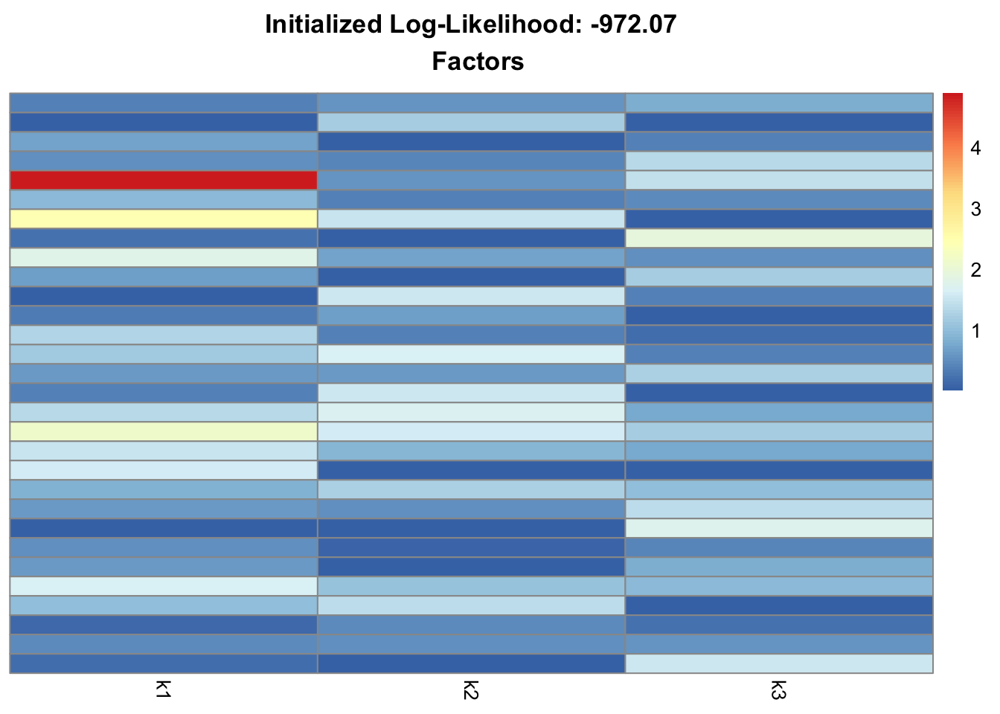
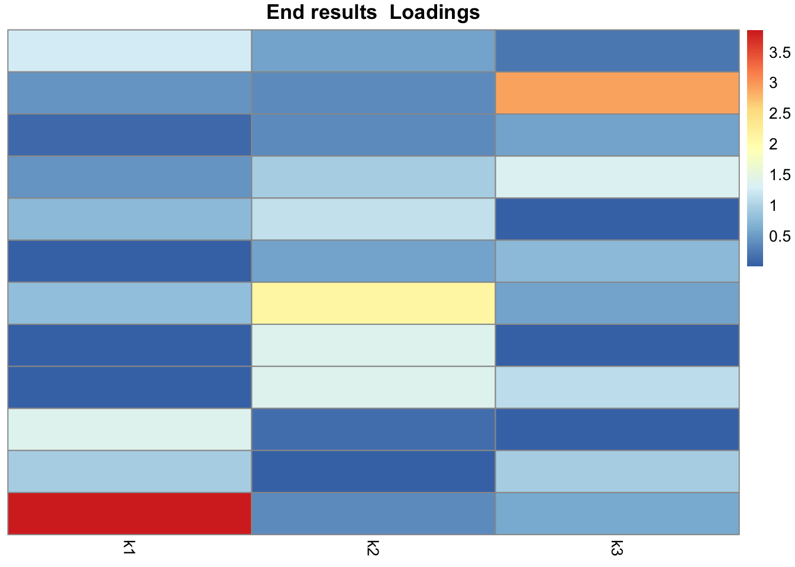
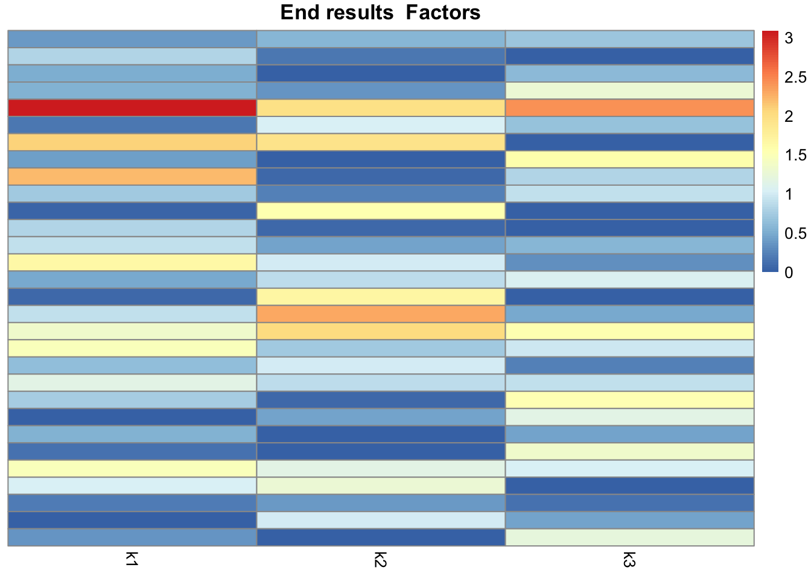
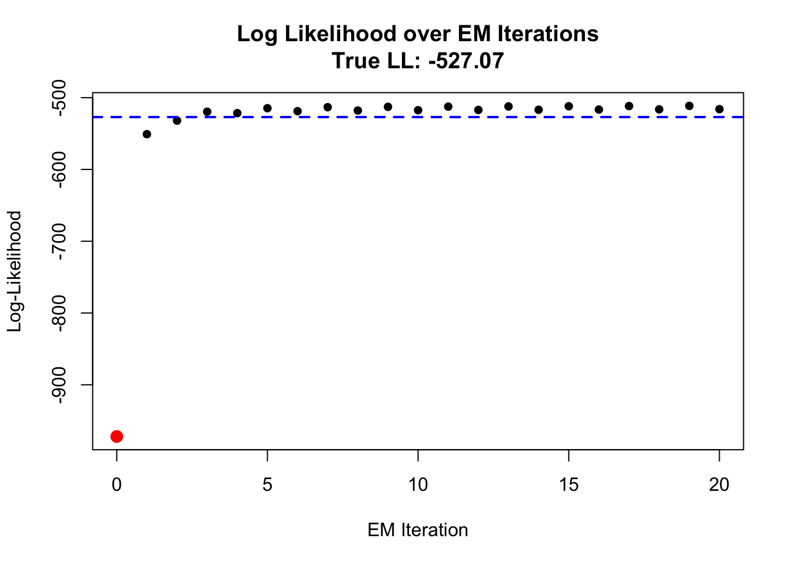
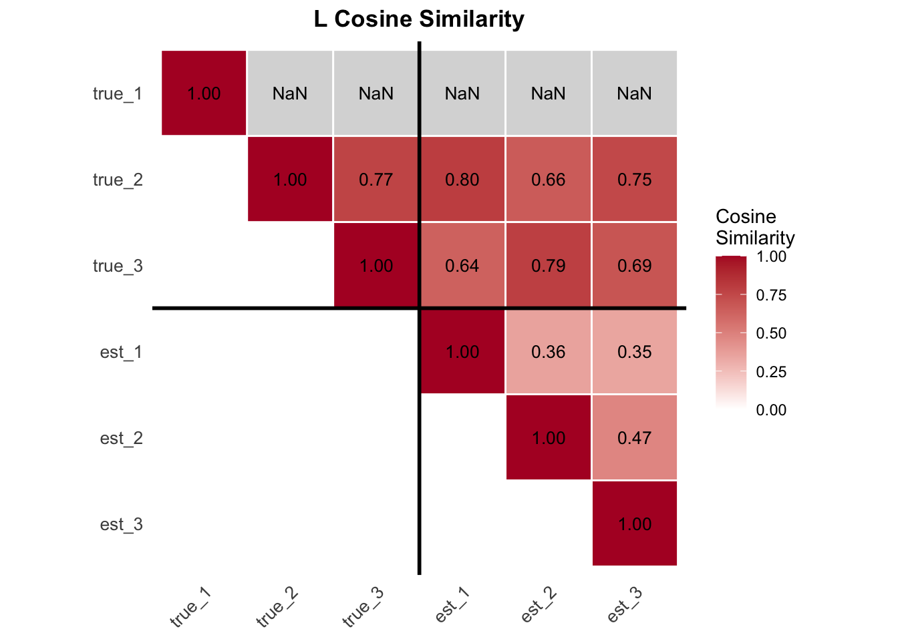
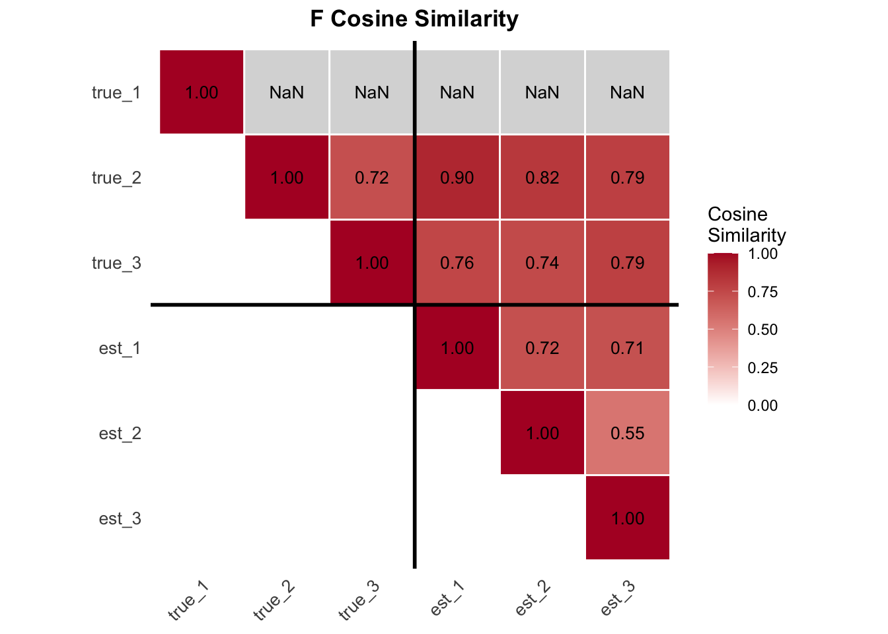
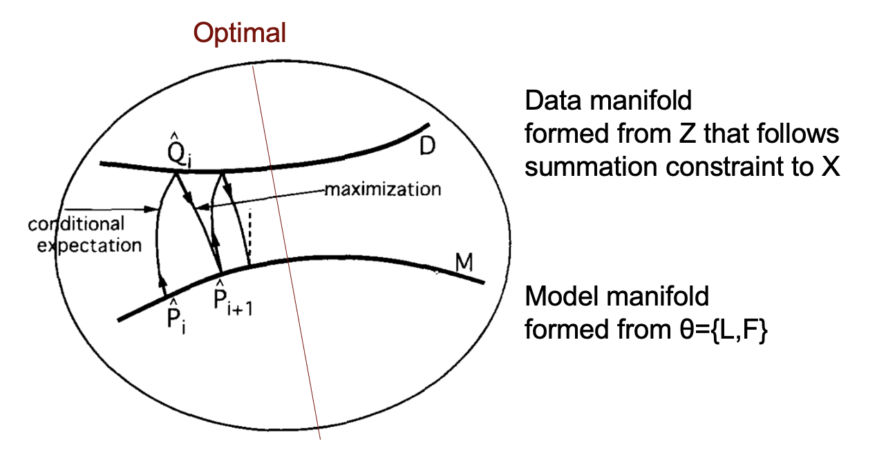

EM
Jihee You
2026-03-27
Last updated: 2026-03-27
Checks: 7 0
Knit directory: background/
This reproducible R Markdown analysis was created with workflowr (version 1.7.1). The Checks tab describes the reproducibility checks that were applied when the results were created. The Past versions tab lists the development history.
Great! Since the R Markdown file has been committed to the Git repository, you know the exact version of the code that produced these results.
Great job! The global environment was empty. Objects defined in the global environment can affect the analysis in your R Markdown file in unknown ways. For reproduciblity it’s best to always run the code in an empty environment.
The command set.seed(20260201) was run prior to running
the code in the R Markdown file. Setting a seed ensures that any results
that rely on randomness, e.g. subsampling or permutations, are
reproducible.
Great job! Recording the operating system, R version, and package versions is critical for reproducibility.
Nice! There were no cached chunks for this analysis, so you can be confident that you successfully produced the results during this run.
Great job! Using relative paths to the files within your workflowr project makes it easier to run your code on other machines.
Great! You are using Git for version control. Tracking code development and connecting the code version to the results is critical for reproducibility.
The results in this page were generated with repository version 97d0c1c. See the Past versions tab to see a history of the changes made to the R Markdown and HTML files.
Note that you need to be careful to ensure that all relevant files for
the analysis have been committed to Git prior to generating the results
(you can use wflow_publish or
wflow_git_commit). workflowr only checks the R Markdown
file, but you know if there are other scripts or data files that it
depends on. Below is the status of the Git repository when the results
were generated:
Ignored files:
Ignored: .DS_Store
Ignored: .Rhistory
Ignored: .Rproj.user/
Ignored: analysis/.DS_Store
Untracked files:
Untracked: analysis/.ipynb_checkpoints/
Untracked: analysis/Untitled.ipynb
Untracked: analysis/gene_lst.txt
Untracked: analysis/gtex_processing.ipynb
Unstaged changes:
Modified: analysis/main.Rmd
Modified: background.Rproj
Deleted: code/README.md
Deleted: data/README.md
Note that any generated files, e.g. HTML, png, CSS, etc., are not included in this status report because it is ok for generated content to have uncommitted changes.
These are the previous versions of the repository in which changes were
made to the R Markdown (analysis/em.Rmd) and HTML
(docs/em.html) files. If you’ve configured a remote Git
repository (see ?wflow_git_remote), click on the hyperlinks
in the table below to view the files as they were in that past version.
| File | Version | Author | Date | Message |
|---|---|---|---|---|
| Rmd | 97d0c1c | jiheeyy | 2026-03-27 | wflow_publish("analysis/em.Rmd") |
| html | c6dd13a | jiheeyy | 2026-03-10 | Build site. |
| Rmd | efd473c | jiheeyy | 2026-03-10 | final EM |
| html | 140cb5e | jiheeyy | 2026-03-09 | Build site. |
| Rmd | 42fc71b | jiheeyy | 2026-03-09 | include metrics |
| html | 79e6098 | jiheeyy | 2026-03-09 | Build site. |
| Rmd | 0280453 | jiheeyy | 2026-03-09 | include PNMF and latent variable formulation |
| html | 11c27be | jiheeyy | 2026-03-08 | Build site. |
| Rmd | 819b327 | jiheeyy | 2026-03-08 | Working version of EM on Simulation Data |
What is Poisson Nonnegative Matrix Factorization?
Let \(X \in R_{+}^{n \times p}\) denote a matrix of observed counts \(x_{ij}\). We assume \(X_{ij} \sim Poi(\sum_k L_{ik}F_{jk})\).
Poisson NMF parameters include \(L \in R_{+}^{n \times k}\) and \(F \in R_{+}^{p \times k}\), and we seek values of L and F such that \(X \approx LF^T\).
Generating X of Interest
For this project, we are interested in a particular kind of count data \(X\) such that there are K distinct hidden groups that we expect matrix factorization to reflect. Let’s generate a small dataset with 3 distinct groups.
set.seed(4)
source(here("docs","code","load_data.R"))
source(here("docs","code","utils.R"))
library(pheatmap)
library(ggplot2)
library(Matrix)
# "mix", "clear","news"
data <- general_load(data_type="mix")
X = Matrix(data$X, sparse = TRUE)
# Visualize Ground Truth L, F
#visualize_lf(data$L, data$F, "True")Implementation: EM
# Computes E_Z, which is a n x p x k matrix
E_step <- function(log_L, log_F, X){
X_summary <-summary(X)
x_val <- X_summary$x
i <- X_summary$i
j <- X_summary$j
log_Lambda = compute_log_Lambda_mat(log_L, log_F, X)
loglam_val <- log_Lambda@x
# Compute W_ij = X_ij / Lambda_ij (Only for non-zeros)
W_val <- exp(log(x_val) - loglam_val)
W <- sparseMatrix(i=i, j=j, x=W_val, dims=dim(X))
# Fast sparse matrix multiplications in original space
L <- exp(log_L)
F <- exp(log_F)
W_dot_F <- as.matrix(W %*% F) # n x k
Wt_dot_L <- as.matrix(t(W) %*% L) # p x k
# Back to log space
logEz_sj = log_L + log(W_dot_F) # Ez with j dimension summed, n x k
logEz_si = log_F + log(Wt_dot_L) # Ez with i dimension summed, p x k
# Return two squished slices of logEz
return(list(logEz_sj = logEz_sj, logEz_si = logEz_si))
}
# Update log_L, log_F
M_step <- function(log_L, log_F, E_res){
# Prepare inputs
logEz_sj = E_res$logEz_sj
logEz_si = E_res$logEz_si
# Update L first
F <- exp(log_F)
logF_sj = log(colSums(F)) # length k
newlog_L = logEz_sj - rep(logF_sj, each = nrow(log_L))
# Then update F
L <- exp(log_L)
logL_si = log(colSums(L)) # length k
newlog_F = logEz_si - rep(logL_si, each = nrow(log_F))
return(list(log_L=newlog_L, log_F=newlog_F))
}Putting everything together,
library(fastTopics)
source(here("docs","code","initialize.R"))
source(here("docs","code","utils.R"))
# library(NNLM)
# Another option in initialization
# init_res = NNLM::nnmf(A = as.matrix(data$X), k = 3)
# log_L = log(init_res$W)
# log_F = log(t(init_res$H))
try({gt_ll = compute_loglik(log(data$L), log(data$F), X)
cat("ground truth log likelihood: ",gt_ll)})ground truth log likelihood: -527.0698# L, F initialization
init_res = initialize(X=X, K=3)Initializing factors using Topic SCORE algorithm.
Initializing loadings by running 10 SCD updates.
Fitting rank-3 Poisson NMF to 12 x 30 sparse matrix.
Running at most 50 SCD updates, without extrapolation (fastTopics 0.6-192).log_L = init_res$qg$qllog_norm
log_L = log_L[sample(nrow(log_L)),] # inject randomness since log_L overfit
log_F = init_res$qg$qflog_norm
init_ll = compute_loglik(log_L, log_F, X)
# Figure 1: Initialized L, F
visualize_lf(exp(log_L),
exp(log_F),
sprintf("Initialized Log-Likelihood: %.2f\n", init_ll))

maxiter=20
ll_list = rep(numeric(maxiter))
for (niter in 1:maxiter){
Ez_two = E_step(log_L, log_F, X)
new = M_step(log_L, log_F, Ez_two)
log_L = new$log_L
log_F = new$log_F
ll = compute_loglik(log_L, log_F, X)
ll_list[niter] = ll
cat("niter ",niter, "-------------", sprintf("LL: %.2f\n", ll))
}niter 1 ------------- LL: -550.89
niter 2 ------------- LL: -531.99
niter 3 ------------- LL: -519.61
niter 4 ------------- LL: -521.61
niter 5 ------------- LL: -514.70
niter 6 ------------- LL: -518.86
niter 7 ------------- LL: -513.30
niter 8 ------------- LL: -517.93
niter 9 ------------- LL: -512.81
niter 10 ------------- LL: -517.49
niter 11 ------------- LL: -512.51
niter 12 ------------- LL: -517.16
niter 13 ------------- LL: -512.24
niter 14 ------------- LL: -516.86
niter 15 ------------- LL: -511.98
niter 16 ------------- LL: -516.58
niter 17 ------------- LL: -511.73
niter 18 ------------- LL: -516.30
niter 19 ------------- LL: -511.48
niter 20 ------------- LL: -516.03# Figure 2: L, F after EM iterations
visualize_lf(exp(log_L), exp(log_F), "End results")

# Figure 3: Plot Log likelihood over EM iterations
y_bounds <- range(c(init_ll, ll_list, gt_ll), na.rm = TRUE)
plot(1:length(ll_list), ll_list,
xlim = c(0, length(ll_list)), # Expands x-axis to include 0
ylim = y_bounds, # Expands y-axis to fit all values
main = sprintf("Log Likelihood over EM Iterations\nTrue LL: %.2f", gt_ll),
ylab = "Log-Likelihood",
xlab = "EM Iteration",
pch = 16) # Solid circle marker
points(0, init_ll, col = "red", pch = 16, cex = 1.5) # Initial LL point at x = 0
abline(h = gt_ll, col = "blue", lty = 2, lwd = 2) # True LL
We see EM algorithm consistently (although not across every iteration) increases in log-likelihood. Initialization is row-perturbed L and F produced from fasttopics PMF.One thing to note is the fasttopics PMF outputs log likelihood much higher than the “ground truth,” probably due to overfitting. If initialized with PMF, EM iterations marginally decrease in log likelihood over time.
Evaluate
Cosine similarity between vectors doesn’t seem to be a good metric conveying information about the quality of estimated \(l_k\), since it cannot differentiate between true \(l_k\) or \(f_k\) anyways. I hoped cosine similarity between true vectors would be close to zero, so that true vs. estimated vectors would give insight to the degree of different information carried by K estimated vectors.
Mean absolute error is less than one, which is not great but acceptable since it would mean EM estimated \(\lambda_{ij}\) is off by less than one count from true \(\lambda_{ij}\).
source(here("docs","code","utils.R"))
source(here("docs","code","eval.R"))Warning: package 'lsa' was built under R version 4.5.1Loading required package: SnowballCmae = eval_mae(est_L=exp(log_L), est_F=exp(log_F),
true_L=data$L, true_F=data$F,
X=X)
cat("Mean absolute error: ",mae)Mean absolute error: 0.5141107csim = eval_csim(est_L=exp(log_L), est_F=exp(log_F),
true_L=data$L, true_F=data$F)
plot_upper_heatmap(csim$cos_L, "L Cosine Similarity")
plot_upper_heatmap(csim$cos_F, "F Cosine Similarity")
Code for MAE and cosine similarity calculation was moved dto eval.R, but below is the commented out version of the code.
# Evaluate L, F using mean absolute error from
# ground truth L, F (if known from simulation)
# eval_mae <- function(est_L, est_F, true_L, true_F, X){
# est_loglam = compute_log_Lambda_mat(log_L = log(est_L),
# log_F = log(est_F),
# X = X)
# loglam = compute_log_Lambda_mat(log_L = log(true_L),
# log_F = log(true_F),
# X = X)
# mae = mean(abs(exp(est_loglam) - exp(loglam)))
# return(mae)
# }
#
# eval_csim <- function(est_L, est_F, true_L, true_F){
#
# k = ncol(true_L)
# estk = ncol(est_L)
# col_names <- c(paste0("true_", 1:k), paste0("est_", 1:estk))
#
# combined_L <- cbind(true_L, est_L)
# colnames(combined_L) <- col_names
# cos_L <- lsa::cosine(combined_L)
#
# combined_F <- cbind(true_F, est_F)
# colnames(combined_F) <- col_names
# cos_F <- lsa::cosine(combined_F)
#
# return(list(cos_L = cos_L, cos_F = cos_F))
# }
#
# # Input 1 matrix, text title
# plot_upper_heatmap <- function(sim_mat, plot_title) {
# rows <- row(sim_mat)
# cols <- col(sim_mat)
# upper_tri_mask <- rows <= cols
#
# df <- data.frame(
# Row = rownames(sim_mat)[rows[upper_tri_mask]],
# Col = colnames(sim_mat)[cols[upper_tri_mask]],
# Value = sim_mat[upper_tri_mask]
# )
#
# df$Row <- factor(df$Row, levels = rev(rownames(sim_mat)))
# df$Col <- factor(df$Col, levels = colnames(sim_mat))
#
# # Count how many "true" and "est" factors exist
# num_true <- sum(grepl("^true_", colnames(sim_mat)))
# num_est <- sum(grepl("^est_", colnames(sim_mat)))
#
# # X-axis goes left-to-right. The line goes after the last "true_"
# x_intercept <- num_true + 0.5
#
# # Y-axis goes bottom-to-top (because we reversed the levels).
# # The line goes above the highest "est_"
# y_intercept <- num_est + 0.5
#
# p <- ggplot(df, aes(x = Col, y = Row, fill = Value)) +
# geom_tile(color = "white", linewidth = 0.5) +
# scale_fill_gradient2(low = "#2166AC", high = "#B2182B", mid = "white",
# midpoint = 0, limit = c(0, 1),
# name = "Cosine\nSimilarity",
# na.value = "grey85") +
# geom_text(aes(label = ifelse(is.na(Value), "NaN", sprintf("%.2f", Value))),
# color = "black", size = 3.5) +
#
# # --- NEW: Draw the quadrant lines ---
# geom_vline(xintercept = x_intercept, color = "black", linewidth = 1) +
# geom_hline(yintercept = y_intercept, color = "black", linewidth = 1) +
#
# theme_minimal() +
# theme(
# axis.text.x = element_text(angle = 45, hjust = 1, size = 10),
# axis.text.y = element_text(size = 10),
# axis.title = element_blank(),
# panel.grid = element_blank(),
# plot.title = element_text(face = "bold", hjust = 0.5)
# ) +
# coord_fixed() +
# ggtitle(plot_title)
#
# return(p)
# }Additional questions to explore
S. Amari, Information geometry of the EM and em algorithms for neural networks (1995) gives a geometric view of the EM algorithm. I’m interested in how the overfitted PMF solution would fit into this view.

sessionInfo()R version 4.5.0 (2025-04-11)
Platform: x86_64-apple-darwin20
Running under: macOS Sequoia 15.4.1
Matrix products: default
BLAS: /Library/Frameworks/R.framework/Versions/4.5-x86_64/Resources/lib/libRblas.0.dylib
LAPACK: /Library/Frameworks/R.framework/Versions/4.5-x86_64/Resources/lib/libRlapack.dylib; LAPACK version 3.12.1
locale:
[1] en_US.UTF-8/en_US.UTF-8/en_US.UTF-8/C/en_US.UTF-8/en_US.UTF-8
time zone: America/Chicago
tzcode source: internal
attached base packages:
[1] stats graphics grDevices utils datasets methods base
other attached packages:
[1] lsa_0.73.4 SnowballC_0.7.1 fastTopics_0.6-192 Matrix_1.7-3
[5] ggplot2_3.5.2 pheatmap_1.0.13 here_1.0.2 workflowr_1.7.1
loaded via a namespace (and not attached):
[1] gtable_0.3.6 xfun_0.52 bslib_0.9.0
[4] htmlwidgets_1.6.4 processx_3.8.6 ggrepel_0.9.6
[7] lattice_0.22-6 callr_3.7.6 quadprog_1.5-8
[10] vctrs_0.6.5 tools_4.5.0 ps_1.9.1
[13] generics_0.1.4 parallel_4.5.0 tibble_3.2.1
[16] pkgconfig_2.0.3 data.table_1.17.0 SQUAREM_2021.1
[19] RColorBrewer_1.1-3 RcppParallel_5.1.10 lifecycle_1.0.4
[22] truncnorm_1.0-9 compiler_4.5.0 farver_2.1.2
[25] stringr_1.5.1 git2r_0.36.2 progress_1.2.3
[28] RhpcBLASctl_0.23-42 getPass_0.2-4 httpuv_1.6.16
[31] htmltools_0.5.8.1 sass_0.4.10 yaml_2.3.10
[34] lazyeval_0.2.2 plotly_4.10.4 crayon_1.5.3
[37] tidyr_1.3.1 later_1.4.2 pillar_1.10.2
[40] jquerylib_0.1.4 whisker_0.4.1 uwot_0.2.3
[43] cachem_1.1.0 gtools_3.9.5 tidyselect_1.2.1
[46] digest_0.6.37 Rtsne_0.17 stringi_1.8.7
[49] purrr_1.0.4 dplyr_1.1.4 ashr_2.2-63
[52] labeling_0.4.3 cowplot_1.1.3 rprojroot_2.1.1
[55] fastmap_1.2.0 grid_4.5.0 cli_3.6.5
[58] invgamma_1.1 magrittr_2.0.3 withr_3.0.2
[61] prettyunits_1.2.0 scales_1.4.0 promises_1.3.2
[64] rmarkdown_2.29 httr_1.4.7 matrixStats_1.5.0
[67] hms_1.1.3 pbapply_1.7-2 evaluate_1.0.3
[70] knitr_1.50 viridisLite_0.4.2 irlba_2.3.5.1
[73] rlang_1.1.6 Rcpp_1.0.14 mixsqp_0.3-54
[76] glue_1.8.0 rstudioapi_0.17.1 jsonlite_2.0.0
[79] R6_2.6.1 fs_1.6.6